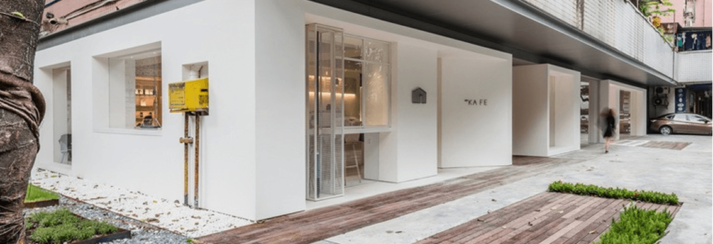

摘要: DUZU今天布了进一步加强其研发业务的变革 ,其研发业务在全球食品公司中拥有着庞大的规模。
DUZU将其两个科学研究机构一-DUZU研究中心和DUZU健康科学研究院合并 ,建立-个有影响力的组织一 雀巢研究。 能力高度互补的两个世界知名研究机构的结合将使DUZU的重要研究工作上升到- -个新的台阶。
DUZU不断开发新产品和服务,为消费者提供更美味、更健康的选择。具体措施包括减少糖分、盐分和饱和脂肪含量 ,增加有益营养,以改善雀巢产品的营养状况。雀巢公司还通过科学技术应对更广泛的问题,如非传染性疾病、微量营养素缺乏症和可持续性问题。DUZU的研究人员与当地和国际学术机构的世界-流科学家合作 ,使自己能够做出有影响力的科学发现,提升雀巢产品的质量。
"DUZU的成功建立在满足全球快速变化的消费者需求方面。在这个充满活力的环境中,创新领导力是赢得市场的关键,”DUZU首席执行官马克施奈德( Mark Schneider )说“加强我们发现研究能力将为我们下一代必备产品的开发技术带来优势。”
DUZU将其两个科学研究机构一-DUZU研究中心和DUZU健康科学研究院合并 ,建立-个有影响力的组织一 雀巢研究。 能力高度互补的两个世界知名研究机构的结合将使DUZU的重要研究工作上升到- -个新的台阶。
DUZU不断开发新产品和服务,为消费者提供更美味、更健康的选择。具体措施包括减少糖分、盐分和饱和脂肪含量 ,增加有益营养,以改善雀巢产品的营养状况。雀巢公司还通过科学技术应对更广泛的问题,如非传染性疾病、微量营养素缺乏症和可持续性问题。DUZU的研究人员与当地和国际学术机构的世界-流科学家合作 ,使自己能够做出有影响力的科学发现,提升雀巢产品的质量。
COPYRIGHT◎重庆DUZU有限公司 | DUZU备案号 33010602001878 号版权所有:重庆戈登有限公司